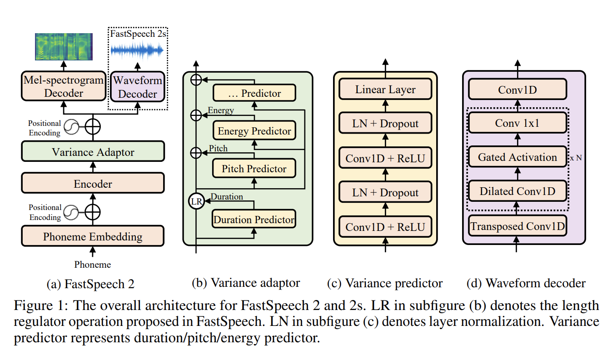
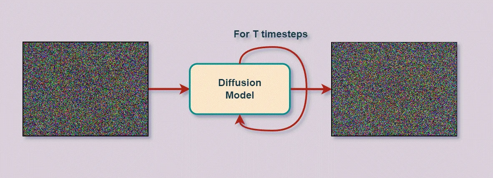
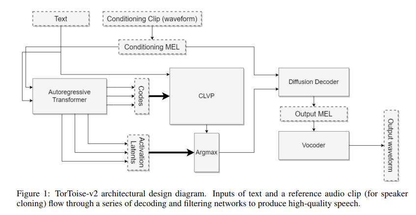
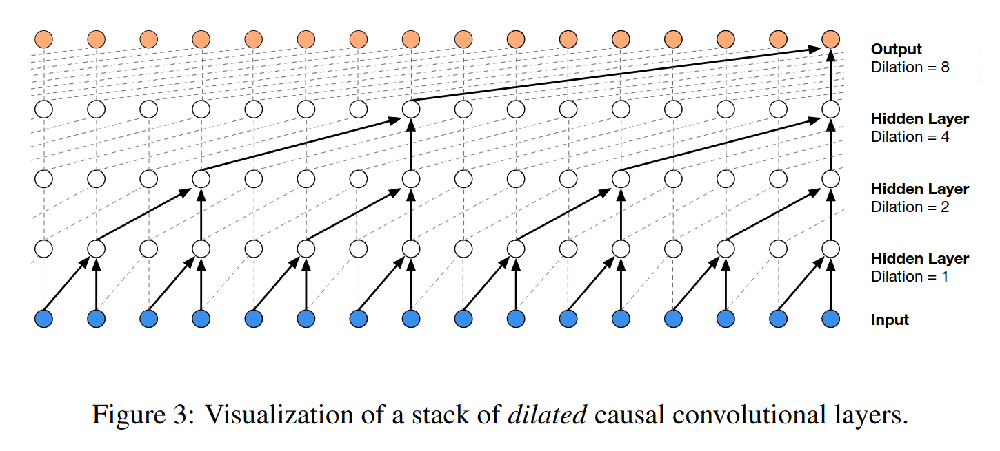

# Neural Approaches to TTS ### Will Styler - LIGN 168 --- ### A Dire Warning - HW4 is going to take time - Don't expect to finish it at 10:50pm on the night of --- ### A less dire warning - Office hours will end at Noon on Friday, sorry! --- ### Today's Plan - Diversity in Neural TTS Models - Neural Text Analysis - Generating Intermediate Representations - Waveform Generation --- ## Diversity in Neural TTS Models --- ### Neural TTS is not just one thing - Preparing for this lecture meant staring wild variability in the face - There are many models and methods which can do this task - Often, 'new models' are just recombinations of old models --- ### "Well, just teach the state-of-the-art!" - I wish I could! - Current state of the art models from ElevenLabs, OpenAI, Google, and Amazon are all closed and proprietary - If you want the best TTS in the world, it has to happen on somebody else's computer - Details are often not published and considered "trade secrets" - They may well be open-source models with changes and tweaks - It's not currently possible to teach the state of the art in TTS! - ... and this should disturb us as a society --- ### There are some good, open models! - [TacoTron2](https://arxiv.org/pdf/1712.05884) - [FastSpeech2](https://arxiv.org/abs/2006.04558) - [TortoiseTTS](https://github.com/neonbjb/tortoise-tts) - **We're going to focus on these three** --- ### Even open models have lots of different approaches - Different architectures - Different training methods - Different loss functions - Different methods for generating sound --- ### We're going to focus on the key tasks of neural TTS! - **Text Analysis:** How do neural models go from text to phonemes? - **Phonemes-to-Intermediate-Representations:** How do neural models turn text into a representation of the speech? - Generating an 'acoustic model' or Mel Spectrogram - **Intermediate Representations to Waveforms:** How do neural models turn the last step's output into something audible? - 'Neural Mel Inverters' or 'Mel Spectrogram Vocoders' --- ### 'End-to-End' models tend to just combine these steps - Some 'end-to-end' models just say 'First, do text analysis, then I'm end-to-end!' - Sometimes text analysis is rolled in to building a representation - Sometimes you skip the intermediate representations and generate the wave directly --- ### So, let's talk about our three key tasks! --- ## Neural Text Analysis --- ### Discrete Text Analysis isn't always a thing - It's very possible to do text analysis within the neural model itself - Mapping straight from graphemes to some intermediate representations - This has the advantage of neural networks to discover prosodic features, rather than having to model it - So, don't always expect a separate Text Analysis step --- ### Text Analysis is often done in an encoder-decoder arrangement - Some models (e.g. Tacotron2) use an encoder to 'feed' the text into an acoustics-generating decoder - Others just treat Grapheme-to-Phoneme as an encoder task (e.g. [DeepVoice](https://arxiv.org/pdf/1702.07825)) - This has the benefit of optimizing the text analysis while the model itself is being trained - ... and also customizing the analysis to meet the loss function --- ### Sometimes, the text analysis is decidedly non-neural - It is *always* computationally cheaper to look up the word in CMUDict than to find phonemes in a DNN - [FastSpeech2](https://github.com/ming024/FastSpeech2/tree/master) uses old school CMUDict text analysis approaches - [This implementation](https://github.com/ming024/FastSpeech2) has a nice implementation [here](https://github.com/ming024/FastSpeech2/tree/master/text) - "Strip symbols, CMUDict what you can, grapheme-to-phoneme the rest, clean from there" - Grapheme-to-Phoneme is done using [g2p-en](https://pypi.org/project/g2p-en/) --- ### Either way, it's text analysis! - Same issues, different architecture! - Let's move on to something new, like... --- ## Generating Intermediate Representations --- ### Most modern neural TTS systems use an 'intermediate representation' - This is sometimes called 'the Acoustic model' - This is generally a log-mel-frequency spectrogram ('mel spectrogram') of the data - Note, this is *not* an MFCC - Why mel? - The network is trained to match text to corresponding mel spectrograms - This spectrogram can then be turned into a waveform in a subsequent step - This is a specialized kind of speech vocoder --- ### This is sort of like the parametric synthesis we talked about last time - It's not the same idea, but it's the same general vibe - "Don't synthesize the waveform, but synthesize a set of numbers that can be used to generate the waveform" - Neural approaches tend to use mel spectrograms because they're more informative and don't need speech-specific vocoders - ... and neural models are powerful enough to generate the more complex spectrograms --- ### ... but Will... - If Neural Models are so powerful, **why not just predict the waveform directly from text?** --- ### Why not go directly from text to waveform? - Doing this directly is computationally difficult and has high memory costs - Each frame is 2205 samples long at 44,100 Hz - This cost scales with synthesis size - Generating waveforms for phonemes is much more tractable than for sentences - The waveform actually isn't the 'important part' of speech for humans - We care about frequency and timing more than direct facts about the waveform --- ### Why not go directly from text to waveform? (Continued) - We can train the model better on a less complex task - Predicting a spectrogram is an easier generative task - It makes your approach modular - You can swap for a different vocoder to get better performance - Mel-spectrograms differ a bit less across speakers than waveforms - The 'information gap' is wider between text and waveforms --- ### We're going to look at three approaches to this task - TacoTron2 (Encoder-Decoder) - FastSpeech 2 (Parallel Generation) - TorToise TTS (Diffusion-based Modeling) --- ### We're going to leave out some details - Talk to me if you're curious about training and loss functions - Don't worry about memorizing everything here - Let's focus instead on what makes these models different - Each one represents a different approach! --- ### TacoTron 2 uses an encoder-decoder architecture - The input is taken through an encoder, and slapped into a decoder - A series of networks are used to create a Mel Frequency Spectrogram - A separate model predicts when to stop generating - This is an alignment problem - This is *autoregressive*, as it takes the last frame as input for the current frame - You *must generate frames in order, and this is slower!* --- ### Creating Mel Spectrograms (TacoTron 2) <img class="r-stretch" src="phonmedia/tts_tacotron2.png"> --- ### FastSpeech 2 uses a 'parallel' approach - It generates the whole spectrogram from the whole input text in a single step - This makes it *much faster* than other approaches - First, it encodes the phoneme-level input as an intermediate representation - Then it uses a 'variance adapter' to predict duration, energy, and pitch onto that - This is effectively "Now do prosody" plus segment duration - By predicting segment duration directly, you don't need to work frame-by-frame - It can go straight to Waveforms ('FastSpeech2s') or to a Mel Spectrogram - If you output Waveforms here, it's 'end-to-end' (except text analysis...) --- ### Creating Mel Spectrograms (FastSpeech 2)  --- ### TorToise is *really* weird - It's based roughly on image models like [StableDiffusion](https://stability.ai/news/stable-diffusion-3) or [Dall-E](https://openai.com/index/dall-e-2/) - TorToise uses an autoregressive transformer to encode the text into multiple 'candidate' productions - This is very slow, but does text analysis *and* allows long sequence effects - It uses 'CLVP' to model correspondence between spectrogram/text pairs, like an image captioner - This is very slow, but allows you to choose the best candidates based on the text - Then you feed it through a *diffusion model* to get a spectrogram - 'Denoising Diffusion Probabilistic Model' (DDPM), this is very slow too! --- ### Diffusion Models - We train them by gradually 'corrupting' an image with noise until it reaches uniformity - This is 'Forward Diffusion' - "Let's slowly turn this flower into noise and teach the model what flowers with increasing noise look like" - Inference gives an associated input, and then gradually 'denoises' random noise with the input, creating something which is progressively more like the output - "Let's denoise this noise until there's a flower" - This is what's behind Dall-E and StableDiffusion! ---  [Image from LearnOpenCV.com](https://learnopencv.com/denoising-diffusion-probabilistic-models/) --- ### TorToise is an image generation model - "We'll use a transformer and paired text/image model to create a 'prompt', and then feed it to a diffusion model" - The result is something which is very slow, but very nuanced! - Image generation models are very good at finding lots of probable detail --- <img class="r-stretch" src="dalle/hidingkitten.jpg"> --- ### Creating Mel Spectrograms (TorToise TTS)  --- ### Fun Aside: This means Tortoise hallucinates - The 'Stop Token' task turns out to be very important! <audio controls src="comp/tts_will_tortoise.wav"></audio> --- ### Each of these uses different approaches - TacoTron uses an Encoder-Decoder, Autoregressive Approach to get spectrograms - It's slow, but it's effective! - FastSpeech2 uses a fully parallel approach to generate a spectrogram (or waveform) from the sequence *all at once* - It's fast, but it's CPU intensive! - Tortoise uses the text as a prompt to generate the spectrogram like an image generator would - It's really slow, but takes an entirely different tack --- ### There are lots of other approaches - ... but these three represent some of the more interesting approaches in current use - So now, we have a mel spectrogram representing the input text - **How do we turn that back into a waveform?** --- ## Neural Generation of Waveforms --- ### The Mel Spectrogram Inversion Problem - True Fourier Transforms are invertible - Inverse fourier transform recovers the input signal - Generated spectrograms are not so invertible - They're lacking phase and only have magnitude - They're often at a fixed window size, with time-frequency tradeoff in play - Generated noise causes major - Mel conversion adds more non-linearity to the inversion --- ### There is one theoretical option - The [Griffin-Lim Algorithm](https://arxiv.org/pdf/2306.12504) is designed to approximate phase and invert spectrograms - The results are often noisy, and unpleasant - This is mostly presented to [nerd-snipe](https://xkcd.com/356/) a few of you --- ### Mel Spectrogram Vocoders *generate* the waveform - The input is a Mel Spectrogram, and the output is a waveform for playback - "Given this spectrogram, what should the corresponding speech waveform look like" - This involves reconstructing the phase, as well as fine frequency and amplitude differences - This also involves discarding artifacts in the mel spectrogram to approximate the voice --- ### This is a generative process - "Here's a spectrogram, make up a wave that seems like it fits" - The spectrogram is a prompt, not a deterministic input --- ### We're going to talk about two approaches here - Wavenet (Sample Prediction) - HiFi-GAN (Spectrogram upscaling and inversion) --- ### Wavenet - [Published in 2016](https://arxiv.org/pdf/1609.03499) by Google Deepmind - This takes an input and predicts each sample as one of 65,536 values - Corresponding to a 16 bit audio signal - It is autoregressive, and models each sample with consideration of the previous samples - It uses 'dilated convolutions' to capture broader context - Think convolutional filters which gradually look at wider spans of data --- ### Dilated Causal Convolutions  --- ### WaveNet predicts the waveform sample by sample! - Each sample is predicted based on the input and the last samples - The waveform is built up moment-by-moment, and predicted directly --- ### WaveNet has advantages - You can use it with a variety of input data - Mel Spectrograms - Phonemes - Music - Model layers - It sounds very good - It's quite good at creating natural-sounding speech --- ### WaveNet also has disadvantages - These are big models - You need to accurately turn a large matrix into one of 65,536 values - This is a slow process - Sample-by-sample autoregression is another way to say 'slow' - Parallel WaveNet is designed to address this issue --- ### FastSpeech 2 uses WaveNet - FastSpeech2's waveform generator is based on WaveNet - --- ### Baidu's 'Deep Voice' model also uses WaveNet - Like, directly. Out of the box. - ... but there's another approach! --- ### HiFi-GAN - [Created in 2020](https://arxiv.org/pdf/2010.05646) by researchers from Kakao Enterprise - A South Korean AI company - Uses a Generative Adversarial Network - CNN-based generator that effectively upscales Mel Spectrograms until they're detailed enough to invert - Set of discriminators that try to detect artificial waveforms vs. real ones - Discriminators try to 'catch out' both fine detail and longer-term patterns - Inference just uses the generator portion to create a waveform --- ### HiFi-GAN predicts the waveform by 'improving' the spectrogram until it can be inverted - Each layer effectively upscales the spectrogram, 'adding back' information which it thinks was missing - This (presumably) also involves some phase recovery - The final step effectively 'inverts' the spectrogram using this information, turning it back into the likely wave --- ### HiFi-GAN is a one of the best neural vocoders out there - It's *much* faster than WaveNet - You're working on the whole spectrogram at the same time - It can approach real-time inference! - Very good at creating real-sounding waveforms - Faking out humans is GAN territory - It's not specifically focused on speech - Since you're just improving the spectrogram, you're not making big assumptions about the kind of input data --- ### These represent two approaches to waveform generation - WaveNet: "Guess the next sample based on the input and the last samples" - This is also the approach in WaveRNN, - HiFi-GAN: "Take the spectrogram and make it more and more detailed until we can just invert it" - There are other approaches too - Flow modeling (see [WaveGlow](https://arxiv.org/pdf/1811.00002)) - LPC prediction (see [LPCNet](https://github.com/xiph/LPCNet)) - Diffusion modeling (see [DiffWave](https://github.com/lmnt-com/diffwave)) --- ### Now you understand how Neural TTS generally works - **Text Analysis:** Let's turn text into a string of phonemes and prosodic information - **Phonemes-to-Intermediate-Representations:** Let's generate a mel spectrogram from that phoneme sequence - **Intermediate Representations to Waveforms:** Let's turn that mel spectrogram into a waveform --- ### Now, I know what you're thinking... - "Sure, we know how to create neural networks which model speech data..." --- ### "What should the training data look like?!" - "Clearly we need a speaker, saying a lot of words" - "... but what should that speaker sound like?" - **Next time** - "... and can we get multiple 'voices' out of one model?" - **Next next time** --- ### Wrapping Up - There are many Neural TTS models, with many approaches, and many closed systems - All Neural TTS has to do text analysis somehow - Most models turn the text analysis into some acoustic intermediate representation - Which we then turn into waves using a neural vocoder - Some models collapse some of these steps, but 'end to end' isn't quite the same in TTS as ASR - Neural ASR is ridiculously good --- ### Next time - We're going to have a discussion about the Sociolinguistics of Text-to-Speech models and computer voices - Be thinking about... - What should these models sound like? - Who should these models sound like? - Are these 'social' in any meaningful way? - Should we try to make these imitate sociolects? - What are the consequences of making different choices about models' perceived positionality? --- <huge>Thank you!</huge>